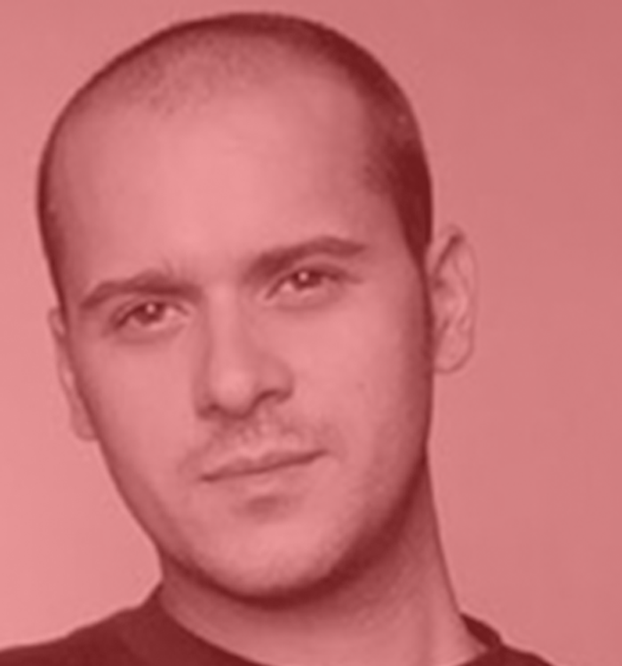

Rui Abreu
Nome: Rui Abreu
Nacionalidade: Portuguesa
Email: info@r-typography.com
Site: www.r-typography.com
Rui Abreu é um designer tipo/gráfico português.
Licenciou-se em Design Gráfico na FBAUP (Faculdade de Belas Artes da Universidade do Porto),
no ano de 2003. Tem trabalhado como designer multimedia em diferentes agências de design e
publicidade e desenvolve também a actividade de designer tipográfico: RTYPE
R-Typography é a "type foundry" fundada por Rui Abreu em 2008, e, atualmente, é gerida em colaboração com Catarina Vaz a partir de Lisboa, Portugal. O seu trabalho foca-se maioritariamente nas coleções para venda, mas fornecem também tipos personalizados para publicações e coorporações.
As fontes para venda que oferecem são um conjunto aperfeiçoado de designs que já foram regonecidos e valorizados internacionalmente. Em 2008, "Orbe" criada por Rui Abreu, recebeu o certificado de excelência do Type Directors Club, que, desde aí, foi premiado repretidamente, incluindo com a vítoria de duas entradas na Letter2 by Atypi em 2011, e mais três certificados atribuídos pela TDM em 2015, 2019, e 2020, não esquecendo também um Granshan 1st Prize em "Arabic Typefaces" em 2016.
R-Typography é a "type foundry" fundada por Rui Abreu em 2008, e, atualmente, é gerida em colaboração com Catarina Vaz a partir de Lisboa, Portugal. O seu trabalho foca-se maioritariamente nas coleções para venda, mas fornecem também tipos personalizados para publicações e coorporações.
As fontes para venda que oferecem são um conjunto aperfeiçoado de designs que já foram regonecidos e valorizados internacionalmente. Em 2008, "Orbe" criada por Rui Abreu, recebeu o certificado de excelência do Type Directors Club, que, desde aí, foi premiado repretidamente, incluindo com a vítoria de duas entradas na Letter2 by Atypi em 2011, e mais três certificados atribuídos pela TDM em 2015, 2019, e 2020, não esquecendo também um Granshan 1st Prize em "Arabic Typefaces" em 2016.
